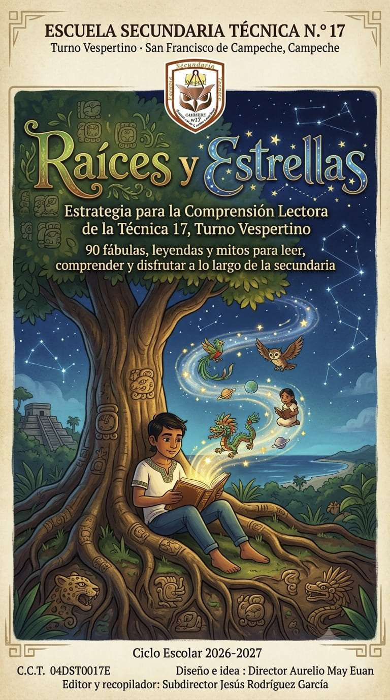

Escuela Secundaria Técnica N.° 17, Turno Vespertino
San Francisco de Campeche
Raíces y Estrellas
Estrategia para la Comprensión Lectora. Noventa historias para leer, comprender y disfrutar a lo largo de la secundaria: de las raíces de nuestra tierra a las estrellas de los mitos antiguos.

Lecturas de esta semana
Consultando el calendario…
Leer bien, con calma y con gusto
Leer con atención es la base de todo lo que un estudiante aprende en la escuela. Por eso cada grupo del turno vespertino trabaja una lectura por semana: 30 al año y 90 a lo largo de la secundaria, sin repetir jamás un texto.
El recorrido avanza de lo cercano a lo lejano: comienza con los animales de nuestro entorno, sigue con las leyendas de la península y termina con los mitos que dieron nombre a las constelaciones.
Cada semana, una asignatura distinta dedica un momento de su clase a la lectura, de modo que toda la escuela lee junta.
- Lectura en silencio5 minutos, de manera individual.
- Lectura en voz alta5 minutos, guiada por el docente o por parejas.
- Preguntas de comprensión10 minutos, de forma individual o en parejas.
- Puesta en comúnDos o tres estudiantes comparten sus respuestas y el docente aclara dudas.
- Registro del avanceEl docente califica con la Rúbrica General de Comprensión Lectora.
Las 90 lecturas
Cada lectura incluye el texto completo y sus preguntas, lista para leer en pantalla o descargar en PDF.
No hay lecturas con ese texto. Prueba con otra palabra del título o con el nombre de una asignatura.
Primer grado: fábulas
Fábulas de adivinanza con animales, muchos de ellos del sureste mexicano.
- 1El saltarín de las charcas
- 2El paciente cargador de casa
- 3La obrera que nunca descansa
- 4La viajera de caparazón duro
- 5La joya que nunca se detiene
- 6La tejedora silenciosa
- 7El que cambia de traje
- 8La lámpara viviente
- 9El de ocho brazos y tres corazones
- 10La que endulza con su trabajo
- 11El de las mil púas
- 12La que nace dos veces
- 13El vigía de la noche
- 14El que camina de lado
- 15El sonriente de las profundidades
- 16El que ve con los oídos en la oscuridad
- 17El que repite lo que escucha
- 18El de la cresta espinosa
- 19El enmascarado de manos hábiles
- 20El pescador de bolsa bajo el pico
- 21El helicóptero de alas transparentes
- 22El astuto de cola peluda
- 23El de la sonrisa de dientes afilados
- 24El rosado que se para en una pata
- 25El rey silencioso de la selva
- 26El de cornamenta ramificada
- 27El de pico multicolor
- 28El que despliega su abanico
- 29El músico de las noches de verano
- 30La viajera de las estaciones
Segundo grado: leyendas del sureste
Leyendas mayas y campechanas: la tierra y la memoria que habitamos.
- 1La Xtabay y la ceiba florecida
- 2El Cadejo de los caminos
- 3Los Aluxes guardianes de la milpa
- 4El enano adivino de Uxmal
- 5El descenso de Kukulkán en Chichén Itzá
- 6Chaac, el señor de la lluvia
- 7Ixchel, la señora del arcoíris
- 8La princesa Sac-Nicté y el guerrero Canek
- 9El cenote sagrado
- 10La leyenda de la Laguna de Bacalar
- 11La dama del malecón
- 12El tesoro escondido del Fuerte de San Miguel
- 13Lorencillo y el asalto a la ciudad
- 14El Uay Chivo, el brujo transformado
- 15La ceiba, árbol sagrado del centro del mundo
- 16El Muan, mensajero de la noche
- 17El origen del henequén
- 18El origen del nombre de Campeche
- 19La fundación de Chichén Itzá
- 20Itzam Cab Ain, el gran cocodrilo del mundo
- 21El origen del maíz y los hombres verdaderos
- 22El Nahual protector del pueblo
- 23La leyenda del pozo de Chen
- 24Sayil y la ciudad de las hormigas
- 25La Sayona que llora entre los manglares
- 26El chultún del agua encantada
- 27Edzná y el dios que enseñó a construir canales
- 28Calakmul y el reino de la serpiente
- 29El origen del nombre de Yucatán
- 30Las grutas de Xtacumbilxunaan
Tercer grado: mitos grecorromanos
Mitos de dioses y héroes de Grecia y Roma: otra forma de contar el mundo.
- 1Prometeo y el robo del fuego
- 2La caja de Pandora
- 3Ícaro y las alas de cera
- 4Aracne, la tejedora orgullosa
- 5El rey Midas y el toque de oro
- 6Narciso y el reflejo del agua
- 7El rapto de Perséfone y el origen de las estaciones
- 8Orfeo desciende por Eurídice
- 9Teseo y el hilo en el laberinto
- 10Perseo y la cabeza de Medusa
- 11Hércules y el león de Nemea
- 12Atalanta y la carrera de las manzanas doradas
- 13Faetón y el carro del sol
- 14Apolo y la persecución de Dafne
- 15Sísifo y la roca eterna
- 16Tántalo y el castigo del hambre eterna
- 17Pigmalión y la estatua que cobró vida
- 18Eros y Psique, un amor puesto a prueba
- 19Aquiles y el único punto débil
- 20Ulises y el astuto engaño al cíclope
- 21Jasón y la búsqueda del vellocino de oro
- 22Dionisio y los piratas transformados
- 23Vulcano, el dios que forjó su propio destino
- 24Eolo, guardián de los vientos
- 25Atlas y el peso eterno del cielo
- 26Europa y el toro blanco
- 27Casandra y la profecía que nadie creyó
- 28Belerofonte y el caballo alado
- 29Ariadna y el hilo que salvó a un héroe
- 30El juicio de Paris y la manzana de la discordia
Cómo se evalúa
La misma rúbrica se aplica a las 90 lecturas. Cada criterio vale de 1 a 4 puntos; la suma máxima es 20 y equivale a 10 de calificación.
| Criterio | Nivel 4 Sobresaliente | Nivel 3 Satisfactorio | Nivel 2 En proceso | Nivel 1 Requiere apoyo |
|---|---|---|---|---|
| Comprensión literal | Nivel 4, sobresalienteIdentifica con precisión todos los datos y características explícitas del texto. | Nivel 3, satisfactorioIdentifica la mayoría de los datos explícitos, con detalles menores omitidos. | Nivel 2, en procesoIdentifica solo algunos datos explícitos; confunde otros. | Nivel 1, requiere apoyoNo logra identificar los datos explícitos del texto. |
| Comprensión inferencial | Nivel 4, sobresalienteDeduce con claridad relaciones, causas y consecuencias no dichas directamente en el texto. | Nivel 3, satisfactorioDeduce la mayoría de las relaciones implícitas, con apoyo ocasional. | Nivel 2, en procesoDeduce relaciones simples, pero con dificultad para las más complejas. | Nivel 1, requiere apoyoNo logra ir más allá de lo explícito en el texto. |
| Pensamiento crítico y valorativo | Nivel 4, sobresalienteArgumenta su opinión con razones claras y la relaciona con su propia vida o contexto. | Nivel 3, satisfactorioExpresa una opinión razonada, aunque con argumentos breves. | Nivel 2, en procesoExpresa una opinión simple, sin argumentar con claridad. | Nivel 1, requiere apoyoNo expresa una opinión propia o no la relaciona con el texto. |
| Identificación del elemento central (respuesta/moraleja/mensaje) | Nivel 4, sobresalienteIdentifica el elemento central y justifica su respuesta con pistas precisas del texto. | Nivel 3, satisfactorioIdentifica el elemento central con una justificación general. | Nivel 2, en procesoIdentifica el elemento central solo con ayuda del docente. | Nivel 1, requiere apoyoNo logra identificar el elemento central del texto. |
| Expresión escrita de las respuestas | Nivel 4, sobresalienteRedacta respuestas claras, completas y ordenadas. | Nivel 3, satisfactorioRedacta respuestas claras, aunque incompletas en algún punto. | Nivel 2, en procesoRedacta respuestas breves o poco claras. | Nivel 1, requiere apoyoNo redacta respuestas o son ininteligibles. |
El semáforo de avance
La plataforma clasifica a cada estudiante según su calificación para dar seguimiento a su progreso durante los tres años.
- Verde8.5 a 10Sobresaliente
- Amarillo7 a 8.4Bien
- Azul6 a 6.9En el umbral
- Rojo5.9 o menosRequiere atención